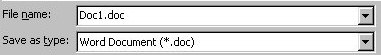
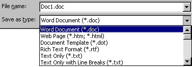
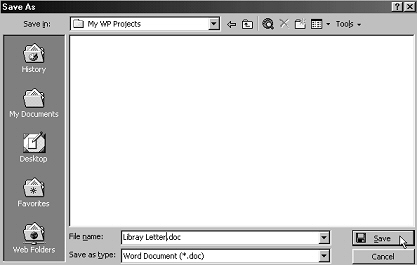
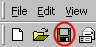

Free
computer Tutorials
|
Free
computer Tutorials
|
|
 home home |
|
|||||
Saving your work - continued |
||||||
|
Saving your Microsoft Word DocumentsSo where does all that work in the previous section get us? Well we have created a folder called "MY WP Projects". We have created this folder inside the My Documents folder. But we still haven't saved our work. To do that we need to fill in the bottom two boxes of the Save As dialogue box. They look like this:  In the File Name box is what your document is called. If you clicked the Save button, your file will be called "Doc1". That's not a very descriptive name for a document, so we'll change it to something else. To give your document a different name, simply click inside the File Name text box. Delete everything in the text box. Type in a new name, something like Library Letter. The final box is the "Save as type" box. If you click the little black arrow to the right of the box, you'll get a drop down list.  So that a file can be recognised on a PC, they are usually given a three letter extension, preceded by a full stop. So for our file called Library Letter, Word will automatically put a full stop after it, and then the three letters doc. All Microsoft Word documents end in the letters doc. No other file on your computer will end in these three letter. That means that any file that ends in doc must be a Microsoft Word file. The other items in that drop down list all have their own three letter extension. A web page will have the extension .htm. So if you clicked on this option, and then clicked the Save button, you would not be saving your work as a Word document but as a web page. All that might sound a bit complicated, if you are beginner. So just leave the Save as Type box as Word Document (*.doc). Your Save As dialogue box should now look like the one below. When it does, click the Save button.  You have now saved your work to your hard drive. To prove that it has indeed been saved, click File > Save As again. When the Save As dialogue box appears, you should see the name of your file in the big white area. Click the Cancel button to get rid of the Save As dialogue box. You can continue to work on a document that has been saved. But if you add more lines to your letter, or make any changes, you need to keep saving your changes on regular basis. You don't have to use Save As any more. You can just click the File menu, then click on Save. Or click on the circled icon in the image below. This will update your document.  Remember to save your work on a regular basis. It's not a pleasant experience to have worked on a document for some time only for your computer to break down. When you finally get your computer to work again, if you haven't saved regularly you'll find all that hard work lost forever, with no way to get it back!
OK, now that we know how to save a word processed document, we can move on. The next section will be about highlighting text. Learn How to Highlight Text in Microsoft Word--> <--Back to the Word Contents Page View all our Home Study Computer Courses |